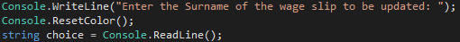
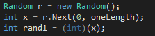
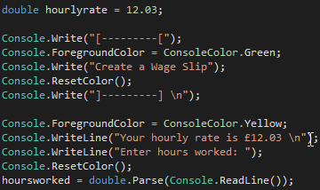
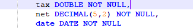
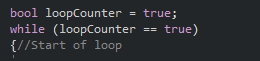
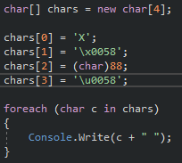

Generic Data Types
String
Strings are data types which are used within programming. They are predominantly used within databases to store text values. Unlike integers and floating points, string are used to represent text values as opposed to numeric values. Strings are composed of a set of characters which include spaces and numeric values. Strings are enclosed within quotation marks to ensure that the data is recognised as a string rather than a numeric value or variable name.
Integer
Integers are data types used within programming, and it can only be used to store whole number values. These values can either be positive, negative or zero, for example, 10, 0, -15 and 5,000 are classed as integers. Unlike floating points, integers are not able to store decimal values. This data type is the most commonly used within programming, due to integers being used within for and while loops. Within these loops, integers can be incremented to perform a specific section of code. Along with this integers can be used to determine a specific item within an array.
Double
Double is a data type used within programming, as this data type is built into a compiler and this data type is used to define and store numeric values which contain a decimal point. Double data types are also able to represent and store fractions and whole numbers. This data type is able to contain a max of 15 digits, this includes digits before and after the decimal point.
Decimal
Decimal is a data type where a double is stored as a string, this allows for fixed decimal points. Decimals are able to store a large number of digits, as the user is able to specify the maximum number of digits that this data type will store. As an example, pay DECIMAL (5, 2), defines that the variable pay is to be stored as a decimal. The number before the comma relates to how many digits can be stored after the decimal point. The number after the comma relates to how many digits can be stored after the decimal point.
Boolean
Boolean is a data type which accepts only two values, these being 1 and 0, true or false and yes or no. As default Boolean is false. The programmer determines the value of the Boolean which can then be implemented within if and while loops. This is achieved by setting a specific value for the Boolean, then creating a loop in which the program will continue to produce a specific output while the Boolean is equal to the defined value. However, one the value is the opposite the loop will break, and the code will continue to function.
Char
Char, short for character, is a data type which is specifically used as a reversed keyword within multiple programming languages including C, C++, C# and Java. This data type is used to store only one character, including letters, numbers and special characters. As an example, Char can store values such as ‘A’, ‘5’ or ‘!’. This can be used to display a specific character within a string or perform a specific section of code once the user enters the character stored within the data type.
Benefits of having multiple data types
There are a number of benefits to having multiple data types, the first being the application or program will be able to load and function faster. The application or program is able to function faster as the data types are built into compilers and are used to store specific types of data which the program will easily and quickly be able to identify. This will enable to program to highlight the data type being used and then continue reading the program. If there was only one data type the computer would have difficulty identifying which data type was being stored and used, resulting in a slower application and program. Another benefit is that multiple data types make it easier for developers to ensure they are storing data within the correct type, along with being able to separate each type of data into its own variable. This will help to improve the quality of code as it will become easier for developers to understand which inputs and variables will contain specific data types along with which data types they are.